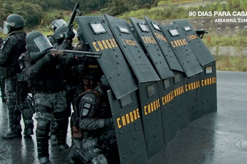
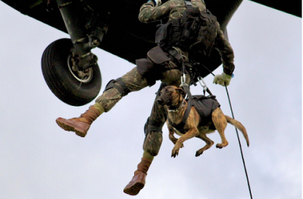
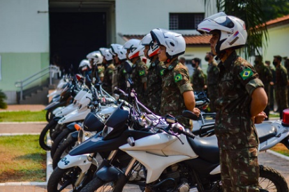
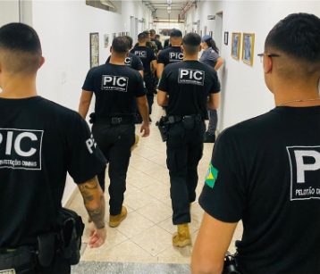

Sobre
Como surgiu?
A Polícia do Exército (PE) foi criada durante a Segunda Guerra Mundial, quando o Brasil enviou a Força Expedicionária Brasileira à Itália. A unidade surgiu para garantir disciplina e ordem nas tropas e nas interações com civis. Após a guerra, a PE se consolidou como uma força permanente, essencial para a segurança e disciplina nas Forças Armadas.
Dias atuais
Atualmente, a PE é uma unidade essencial nas Forças Armadas do Brasil, atuando em missões de segurança, controle de distúrbios, proteção de instalações militares e escolta de autoridades. Além disso, a PE participa de operações de paz internacionais e colabora com forças de segurança pública em eventos de grande porte e situações de crise, sempre mantendo seu compromisso com a disciplina, a ordem e a segurança nacional.
Missão
Orientar o responsável, Corrigir o irresponsável, Prender o incorrigível!
Valores
Honra, Liberdade, Disciplina, Exemplo!TROPAS DA PE
A Polícia do Exército se diferencia por ter diversas tropas atuando em diferentes cenários e com características próprias e específicas trabalhando com excelência em cada esfera de atribuição!
O pelotão de choque é uma unidade especializada em controle de distúrbios e em operações de segurança e proteção . Esse pelotão é treinado para lidar com situações de alto risco, como manifestações, tumultos e situações de crise, onde é necessário restabelecer a ordem.
CHOQUE
"O PELOTÃO CHOQUE É INDIVISÍVEL!"
CÃES DE GUERRA
"MALDITOS CÃES DE GUERRA!"
É o pelotão responsável pela capacitação de cães treinados para atuar em diversas operações de segurança e combate. Eles, são altamente treinados para funções como detecção de explosivos e drogas, busca e resgate, patrulhamento e controle de distúrbios e controle de perímetro!
Especializados em escolta e segurança motorizada, utilizando motocicletas para escoltar autoridades e garantir segurança em comboios. Com treinamento rigoroso e técnicas avançadas de condução, atuam em patrulhamento, controle de tráfego e apoio a operações de grande porte.
BATEDOR
"SEMPRE PRONTO!"
PIC
"UMA VEZ PE, SEMPRE PE!"
Tem a missão de realizar investigações e perícias criminais e de trânsito, executar prisões necessárias como polícia judiciária militar, e avaliar medidas preventivas contra crimes em áreas militares. É composto por militares altamente qualificados, com iniciativa, disciplina e conduta exemplar.
UMA VEZ PE, SEMPRE PE!
Esse é o brado da PE, que simboliza o profundo vínculo e o compromisso duradouro que cada integrante da Polícia do Exército carrega ao longo de sua vida. Mais do que uma simples frase, ele representa a lealdade inabalável e o espírito de corpo dos policiais do Exército, que se dedicam intensamente à missão de proteger, manter a ordem e servir tanto à instituição quanto à sociedade. Ao pronunciar esse brado, os membros da PE reafirmam o compromisso com os valores fundamentais da unidade, como disciplina, coragem e honra, valores que moldam o caráter e acompanham o policial do Exército em todos os momentos de sua carreira. A expressão "Uma vez PE, sempre PE!" marca a união e a identidade de quem integra essa tropa, destacando que o espírito e a responsabilidade do policial do Exército permanecem vivos, mesmo após o tempo de serviço ativo.
CÓDIGO DE HONRA DA PE
Ser honesto,
Amar a verdade,
Cumpir as ordens prontamente,
Usar a autoridade sem prepotência,
Proteger os presos, sob sua guarda,
Comparecer a todo serviço, a qualquer custo
Receba mais informações
Cadastre-se ou faça login para acessar conteúdos exclusivos sobre a Polícia do Exército. Junte-se a nós!